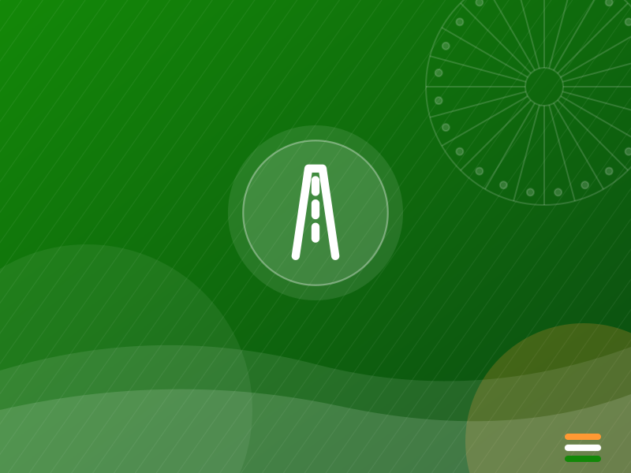

Our commitment
Trusted by villages, built on service
Dummy biography: from neighbourhood volunteer to a trusted voice for communities. Replace with the real story, in warm and simple words.
Dummy second paragraph: focus on health, learning, clean water and a greener region for every family.
Founder, Jan Seva Mission
Services that reach every family
Dummy text describing the programmes run by the mission, kept short and friendly.
See initiativesThe journey so far
Scroll to follow the path.
Community service begins
Started with neighbourhood clean-ups, study circles and local volunteer groups.

Programmes expand
Health, education and environment drives spread across the district.
Jan Seva Mission founded
Two decades of work became a registered non-profit institution.

Entered public life
Took on political responsibility, carrying the same grassroots approach.

Water for 100 villages
A dummy milestone: pipelines and wells reaching dry villages.
Relief during crisis
Food, oxygen and medicine for thousands of families in lockdown.

Leading the region
A development plan built with public consultation (dummy text).


service
Decades of grassroots work
Dummy paragraph: how years of listening, planning and delivering built a team that people trust across the region. Replace with the real story.
Honeycomb timeline
"A leader is measured by the last village he reaches, not the first stage he stands on."
Founder, Jan Seva Mission
Awards & recognition
Best Public Servant
Dummy award description.
2018Rural Champion
Dummy award description.
2020Youth Icon
Dummy award description.
2022Green Leader
Dummy award description.
2024Humanitarian Honour
Dummy award description.
2025Moments with the people

Let's build a stronger tomorrow, together
Invite him to an event, volunteer with the mission or share a local issue. Every message is read by the office (dummy text).